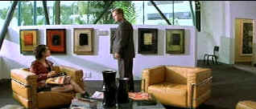

| Panic (SE)/ B,A |
| Artisan/2000/93/ANA 2.35 |
In numerous films, William H. Macy effortlessly captures the guy between a rock and a hard place. In Panic, Macy gives one of his most appealing performances as a loving father going through a mid-life crisis. A wonderful bright six-year-old son is a patch on the romance drained from his marriage, but Alex's eye is roving. He meets Sarah in the waiting room before his first visit with a psychologist. But the silent volcano bubbling inside Alex has more to do with his relationship with his father. Alex is the heir to the family business and while pop Michael gleefully shares his profession, Alex wants out. You see, the family business is a two person shop. Michael and Alex are hit men.
 |
| Pick-up in a psychologist's office. ©Artisan |
Panic paints with an evil undercoat. It's a contrast of
families and a perversion of values. The casual fashion in which elements are handled heighten the
tension. Written and directed by Henry Bromell, Panic is delivered with straight forward
efficiency. It's both a virtue and a fault of the screenplay. It's so direct that the road map of
its course is plotted too clearly early on. This is Bromell's first feature directing effort, and
it is an outstanding debut. The cinematography is elegant and compliments the simplicity of the
script to perfection. Locations likewise echo the thematic material. Panic is a truly
harmonious production. Panic just falls short of brilliance, but it is a solid
entertainment.
The acting is outstanding. Macy makes every move Alex makes totally convincing.
Alex, through Macy's controlled effort, is a very sympathetic character, profession
notwithstanding. Neve Campbell is very appealing as Sarah. Her energy compliments Macy beautifully
and she too is natural in her role. Tracy Ullman gives another on target understated performance as
Alex's wife Martha. Donald Sutherland is an inspired choice as Alex's dad Michael. Sutherland plays
demonically cool with graceful élan and dissolves convincingly into the various ages required of
the role. John Ritter delivers psychologist Josh Parks with solid strokes. Barbara Bain adds
a cold Barbie Doll ruthlessness as Alex's mother Deirdre. Director Bromell does an excellent
job of matching characteristics of Alex at various ages. It goes a long way to understanding the
character and his arc.
Artisan has turned Panic out in a beautiful anamorphic widescreen
transfer. Color saturation is brilliant. Check out little Sammy's birthday party for an array of
balloon video color worth celebrating. But it is the color in variously lit interiors that is truly
beautiful, enriched by a warm sheen of brilliance. Contrast is excellent, night scenes resolved
perfectly and bright days delivered with no sky bloom or unsightly edge transitions. This is as
clean a transfer you'd ever want. Sharp with no help from over-zealous control tweaks, Panic
achieves a terrific depth of field. The cool, faintly techno score is well recorded on the Dolby
Digital 2.0 Surround audio.
Artisan gives Panic a special edition treatment. There are five deleted
scenes which are a good indication that the current edit is the best of the material. Director
Henry Bromell provides an excellent audio commentary over the action.

Selections from the Feature Archive
include articles on Akira Kurosawa, Frank
Darabont, Blonde Bimbos, Hollywood Street Gangs, or Vietnam: The
Hollywood Pariah, and many more....
Film noir: The phrase hangs awkwardly on the tongue, shadowy images peek out from behind half-closed doors. Click on the Noir and Noir Again symbol for a look into the dark spaces of Hollywood's revisiting of film noir.

If the FBI Warning won't get you than the logo wars
will.

Imaging Science Foundation
The Imaging Science Foundation promotes proper standards in home theater viewing. ISF trained
technicians offer monitor calibration services to consumers. The difference in a properly
calibrated monitor can be astounding. Click on the image to find an ISF member near you.
MRQE
Find reams of movie and DVD reviews at the Movie Review
Query Engine, a index of reviews appearing on the Internet.

An on-line Home Theater magazine with excellent hardware reviews,
including thorough and responsible research. Check it out.

A great place to link through the noses of Mount Rushmore into the mind
behind North by Northwest.